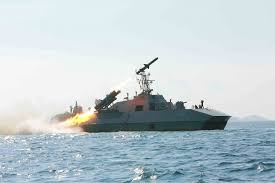

Operation Lucky Dragon
Emmanuel Loria
Operation Lucky Dragon

Description of the Cyber Operation
Operation Lucky Dragon is an ultra-covert cyber operation conducted by South Korea's National Cyber Command in concert with the U.S. Cyber Command under the guise of a naval exercise. Operation Lucky Dragon aims to intrude into North Korea's naval communications systems to destroy key sensors providing maritime surveillance in a strategic portion of international waters disputed between both nations.
Offensive Cyber Strategy
Main Objective
This operation starts with South Korea developing an infiltration of North Korean naval networks through the application of a mix of phishing attacks and zero-day exploits in order to infiltrate the central command system. This will include, but is not confined to, strategic strikes against key markers like radar systems, control centers for unmanned underwater vehicles, and naval communication satellites.
Cyber Tools
- Zero-Day Exploits: Custom malware is developed to exploit vulnerabilities in North Korea’s naval command software.
- APTs: South Korea's cyber units, utilizing APT methods, gain long-term access to communication channels.
- Signal Jamming: Once inside, South Korea’s cyber units execute temporary signal jamming to disrupt critical naval operations during peak military exercises.
Legal Issues Governing the Authorized Conduct of Cyber Operations
- Grey Area of International Law: Cyberattacks on military infrastructure may be interpreted as acts of war, yet international law lacks clear guidelines for classifying covert cyber operations in wartime or peacetime contexts.
- Challenges in Attribution: The covert nature of such operations complicates direct attribution, making it difficult for the targeted nation to hold the initiating country accountable or justify proportional retaliation.
- Plausible Deniability: Due to the lack of immediate attribution, the attacking nation can deny involvement, minimizing the risk of diplomatic repercussions and maintaining a stance of non-aggression in the international arena.
Summary of Tools, Techniques, Technology, and Data Used
Operation Lucky Dragon is a covert cyber operation by the South Korean National Cyber Command against the naval and communications networks of North Korea. That would ensure crippling the ability of the military in North Korea through the disabling of major maritime sensors, the intercepting of military communications, and the attaining of strategic knowledge of the naval activities across disputed waters. Such infiltration and jamming of the systems are pursuits through which one may seek to slow down or weaken the Northern naval maneuvers to gain a tactical advantage. It is an operation which employs advanced malware and exploits zero-day. Since the incident is surreptitious, attribution will be hard, thus giving plausible deniability to South Korea under international law.
Defensive Cyber Strategy
Cyber Tools
- Network Segmentation: Isolates critical systems to limit attackers' movement within the network, containing any breach.
- Honeypots: Decoy systems lure attackers away from real assets, allowing defenders to monitor and analyze attack methods securely.
Legal Issues Governing the Authorized Conduct of Cyber Operations
- International Law and Sovereignty: Defensive actions must comply with the UN Charter, which allows nations to defend against attacks but requires proportionality and necessity to avoid escalation.
- Attribution Challenges: Precise attribution is essential before initiating any defensive countermeasures, as misattribution could lead to unjustified escalation and breach international norms.
- Rules of Engagement (ROE): Defensive operations must respect humanitarian law principles, such as distinction, ensuring no civilian infrastructure or non-combatant networks are impacted in retaliation.
Summary of Tools, Techniques, Technology, and Data
To defend against a sophisticated cyber operation like Lucky Dragon, South Korea's adversary deploys a multi-layered defense strategy focused on early detection, containment, and incident response. Key tools include network segmentation to isolate critical assets, and honeypots to mislead attackers and analyze their tactics. The operation is governed by international legal standards, ensuring defensive actions are proportional, attributed correctly, and compliant with humanitarian law, especially in avoiding harm to civilian infrastructure.